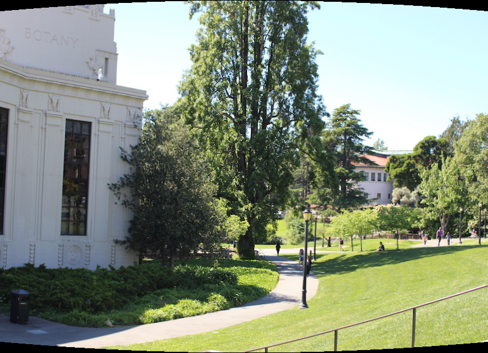
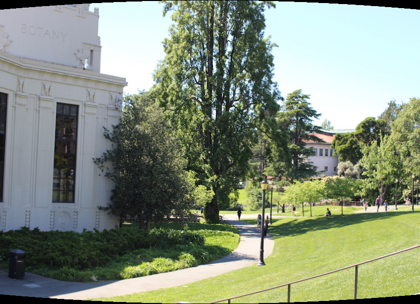

Advanced Poisson Panoramas
By Rishi Kapadia and Dorian Chan
In this project, we tried to go above and beyond panoramas by integrating Poisson techniques into stitching together multiple images. We implemented data structures like quadtrees and algorithms like grid based solvers in order to facilitate faster runtimes as well as more pleasing results. All photos were taken by us!
The Process
First, we decided to try cylindrical projections, where we repeatedly take images and project them on a unit cylinder.
In order to test these projections out, we used a synthetic dataset we found online. We convolved the images together using a pyramid technique, where we downsize the images to identify good locations, and check around these locations at higher resolutions.
Unfortunately, this breaks down for more realistic panoramas. We tried more complicated convolution techniques in the frequency domain and on edges, but that didn’t work so well.
Thus, we decided to use more advanced feature detection. Below are the input images.
First, we need to detect potential features in the 2 images we want to combine. To do this, we first find Harris corners, which are pixels that have a gradient magnitude greater than a threshold in both the x and y directions.
We reduced the number of potential features from all pixels in the image to just the Harris corners, but there are still hundreds of potential features. To reduce that number further, we use non-max suppression, to choose the 500 Harris corners which are the most spread apart from each other, to get a good distribution of features around the image.
We compute a feature descriptor for each of these points, which is a 20x20 region around the pixel, and downsample the descriptors to 8x8 cells.
To find feature correspondences between the two images, we compute the first 2 nearest neighbors using the feature descriptors. We keep only the pairs of points for which the ratio of the 1st nearest neighbor to the 2nd nearest neighbor is greater than a threshold. This gets rid of most of the points that do not correspond to any point in the other image.
The nearest neighbor method doesn't robustly eliminate all false correspondences. Thus, we use the RANSAC algorithm to randomly choose 4 pairs of point correspondences, compute the best translation offset using those points, and calculate how many pairs are within 2 pixels of that translation. We iterate over this many times and keep the pairs corresponding to the translation that agrees with the most pairs. Eliminating the faulty correspondences gives us the pairs of points that have similar features in both images.
We then decided to work on blending the distinct images together. We decided to implement Poisson blending in order to perform stitching, which provides very nice results.
Unfortunately, we found that it was very time and memory intensive. Thus, we decided to try and implement different techniques to minimize these drawbacks, and compare the results. However, we found many of these techniques were very susceptible to poor boundary conditions, as you can see the black shadows in the image below.
We decided to dub our first technique Poisson pyramid blending. We first built a pyramid of differing resolutions of our image. For each resolution, we cut the image into multiple “picture frame” slices, and then solved the Poisson equation for each slice in isolation using the previous resolution for our boundary conditions. We found that this technique used about ¼ the memory of naive Poisson and the same amount of time. However, we found this technique to be particularly susceptible to boundary conditions, as we got a lot of washing out or shadowing. We had to modify the Poisson equation to also be weighted by the value of the source pixel in order to solve these problems, as you can see below.
For our second technique, we decided to use a quadtree to reduce the dimensionality. The ideal output Laplacian should be the average of the two Laplacians in the overlapping area. Thus, we first calculate a crude composition and its Laplacian, and then calculate the difference between the ideal and the crude Laplacian. We then apply a quadtree to this difference, where we repeatedly subdivide nodes until each node has a variance below a desired threshold. We use this quadtree to reduce the dimensionality from 60000 to about 2000, which is very helpful for both memory and runtime usage. We then solve for the difference, and then add this output value to our crude composition in order to build our output. We found a couple drawbacks with this technique. First, our matrices were no longer square, which meant we had to use least squares solvers - we got inconsistent results. The two below images were run using the same matrices and code. The left is an example of a good output, while the right image is a poor output, with a very visible seam and color saturation.
Below is an example of the phenomena applied to an entire panorama:
As a fun application, we decided to try applying the above techniques to blending two distinct images together. We found that RANSAC and feature detection failed to find any correspondences between the images, so we had to fall back onto convolution techniques, which seemed to do decently, as you can see below.
We found that mixed gradients worked well for these scenarios, while seamless gradients worked better for the panoramas shown above. Below is an example of applying mixed gradients to entire panoramas. As you can see, the image doesn’t look quite right.
As a benchmark, we decided to also implement Laplacian Pyramid blending, which for the most part provided comparable results to our Poisson implementations.
We also implemented spherical projections - however, we weren’t able to take or find any pictures suitable for this. Thus, we decided to just try them on our existing cylindrical photos.
Cylindrical:
Spherical:
We also found that existing panorama projection techniques failed to work for panoramas taken at an angle - i.e. looking up at the sky. We decided to try projecting the images onto either downward or upward facing cones. You can see the slight distortion below. However, we found that it was nigh impossible to match the photos together using feature detection or even convolution without a lot of distortion.
Original:
Downwards:
Upwards:
We also developed a viewer for 360 degree panoramas, but we can’t show that in this writeup!
We had a couple ideas for future work.
It might be beneficial to compare “normalized” gradients relative to the entire image instead of raw gradients in the mixed gradients technique, as we found mixed gradients failed in situations with complex backgrounds.
In Poisson, instead of using quadtrees, we could use more complicated basis functions in order to reduce dimensionality, such as Fourier decompositions or splines.
For our quadtree technique, we could instead build our Laplacian matrix on the quadtree itself, instead of checking points from the original image. We would then get a square matrix, and lose a lot of the numerical instability.
Our pyramid technique could be easily parallelized, as we cut the images into multiple independent slices and solve the Poisson equation independently.
One repeated problem we came across a lot in Poisson is that boundary conditions are not very nice, especially when half your image hangs off the side of another image. Coming up with better ways instead of weighting by the original image would provide more seamless results and more consistent color across a panorama.
In the scenario where we blend together distinct images, we could possibly modify the feature detection to work with different angles and rescaling, which would be helpful for finding correspondences.
Thanks for reading!
Our Github is here.